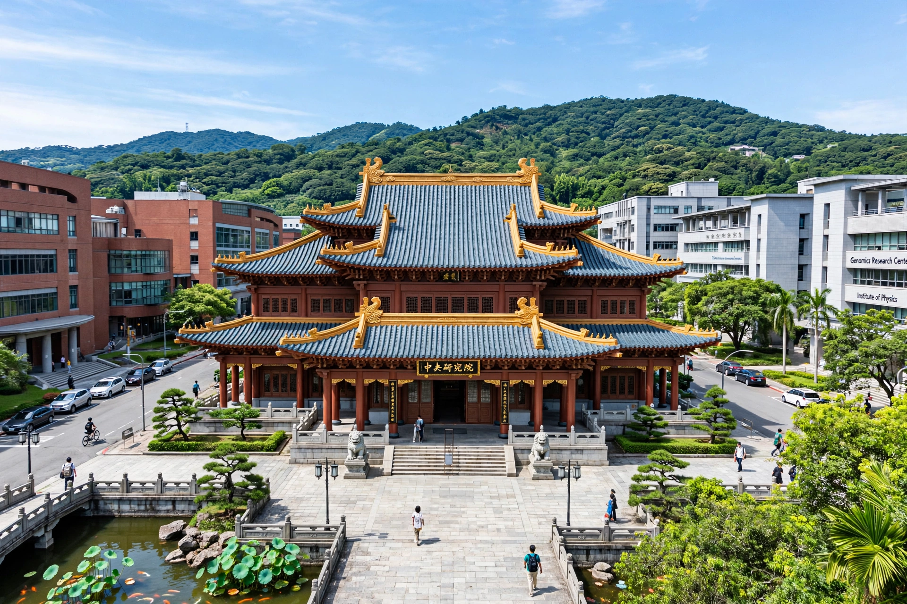

Academia Sinica

| Established | 9 June 1928 |
|---|---|
| Type | National academy |
| Headquarters | Nangang, Taipei, Taiwan |
| President | James C. Liao (since 2016) |
Academia Sinica (Chinese: 中央研究院; literally "Central Research Academy") is the national academy of Taiwan (Republic of China), headquartered in Nangang, Taipei. Founded in Nanjing in 1928, it supports research in mathematics and physical sciences, life sciences, and humanities and social sciences, and its members include many Nobel laureates. It is widely regarded as Taiwan's most prestigious research institution.
History
Academia Sinica was founded by the Republic of China government in 1928, with Tsai Yuan-pei as its first president. Following the Chinese Civil War, it was re-established in Taiwan in 1949, while a separate Chinese Academy of Sciences developed on the mainland. Under presidents such as Hu Shih and Lee Yuan-tseh (a Nobel laureate in chemistry who served 1994–2006), the institution expanded to roughly thirty institutes and research centres.
Organisation
The academy comprises three divisions — mathematics and physical sciences, life sciences, and humanities and social sciences — with institutes covering topics from molecular biology and genomics to history, linguistics, economics and law. Its academicians are elected for life in a convocation held every two years; membership is considered one of the highest honours for Chinese-speaking scholars worldwide.